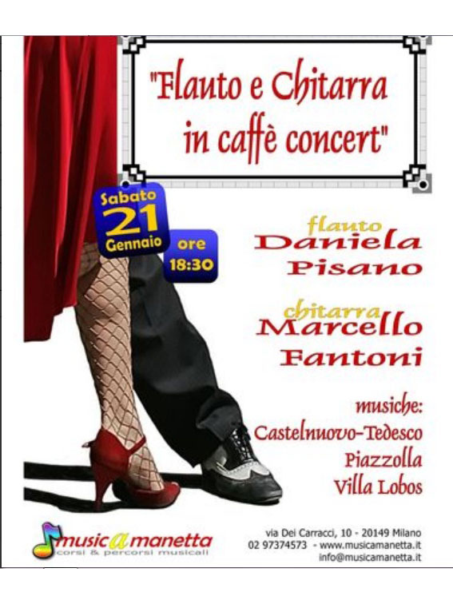
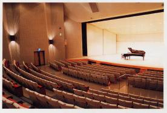
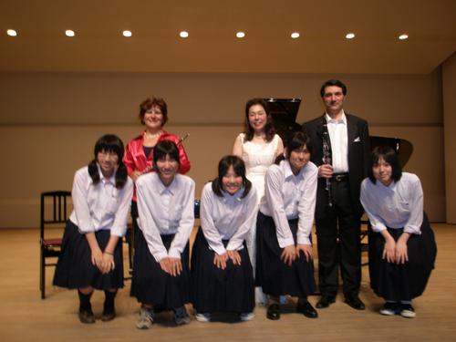
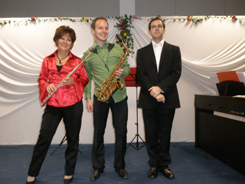

The Concerts of Daniela

======================================

===========================================
Sabato 16 Giugno ore 19,30 con contributo di euro 10,00
è gradita prenotazione - posti limitati
Concerto per Flauto e chitarra con il
duo Daniela Pisano e Santy Masciarò
presso Musica a Manetta
via dei Carracci,10
tel. 02 97374573
info@musicamanetta.it
segreteria@musicamanetta.it
===========================================
"Ensemble Eurydice"
Daniela Pisano Flauto - Flute
Mauro Righini viola - alto
Enrico Barbagli clavicembalo - clavecin
Musiche di - musique de - music of:
Bach, Galuppi, Leclair, Scarlatti, Telemann.
Domenica - Dimanche - Sunday
20 Maggio - Mai - May 2012
alle ore 16 - à 16 h - at 4 p.m.
"Ente Concerti" Castello di Belveglio
Belveglio (Asti)
entrata libera
==============================================================================================================
Dear friends,
Arcaduemila Labarca
and space
are pleased to present the
show
"SONNETS IN
SUCH GIFT"
by William Shakespeare
translated by Robert
Coats inspired
by William Shakespeare
An evening of words
as a gift. What words?
Ten Sonnets of
Shakespeare, said
first in English,
then translated by
Robert Coats,
and twelve sonnets
(some in Elizabethan
metric) that the translator,
poet, in turn,
wrote on love.
As a gift? Written words
are spoken. Old
author's words are
translated by the author
contemporary, and read by
him, together with
other readers.
Contemporary author's words,
certain tax
ancient inspiration, read by
the same three items.
A game of scriptures,
languages and voices,
there has been great presence,
elegant and prodigious,
a Dark Lady.
With Anna
Bonel, Candice Earle
Robert Hutton and
Duvets
Flute Daniela
Pisano
Piano Henry
Barbagli
Sunday, April 22, at 21, at the space
in Via Marco d'Oggiono
Labarca 1, Milan
WE ARE WAITING FOR YOU!!!!!!!
Reservations required and information
at: 339.3911862
Show only suitable
for adults

=============

================================


Concert
=====================================================================

=====================================================================
Saturday April 10 - 2010 at 8,30 p.m.
Sunday April 11 - 2010 at 3 p.m.
Orchestra and chor Europa Voce direction Till Aly Eglise Notre Dame de la Croix de Menilmontant 3, Place de Menilsmontant - Paris 75020
=======================================================


=========================================
MASTERCLASS DI FLAUTO
Masterclass de flute
Flute's Masterclass
Daniela Pisano flute
Daniela Colceriu piano
5 - 8 /Marzo/ 2010
5-8 /Mars/2010
March /5-8 / 2010
LICEUL de ARTĂ “SABIN DRĂGOI” ARAD
B-dul
Revoluţiei Nr.20 cod.310139
Telefon/fax:
0257/281645
Contabilitate:
0257/270771
E-mail:
lic_sabindragoi@rdslink.ro
Click on the link below to see the interview:
href="http://www.infotv.ro/news/10-03-2010/flaut-sabin-dragoi"
==========================================
On the occasion of
===================================================== December
. Saturday 12 . 2009 at 9 p.m. Municipal Hall San Vittore Olona (MI) - Italy Ensemble Eurydice flute, viola, piano and
reciter.... Music of: L.
Maggioni, M. Priori, P. Ugoletti Presented by: "il SETTICLAVIO
associazione artistica non profit" ====================================
"Concert in
the Garden"
August 30
at3 p.m.
composers:
Bach, Giordano, Chopin, Faure, Ibert.
Im
Garten von
Grazyna und Andreas
Brabandstrasse 48
22297 Hamburg
Tel 040-5111946
Sontag 30. August 2009
um
15 Uhr
„Garten Concerto“
klassisch Musikkonzert
« ENSEMBLE EURYDICE »
Daniela PISANO, Flöte
Uly E.NEUNENS Tenor
Jonathan GRIFFITHS, Klavier
Werke von
Bach,
Chopin, Giordano, Faure, Ibert
Tottori (Japan)
"Tottori Bunka Hall"

the 6 June
2009
at 6,30 p.m.
Daniela Pisano
flute
Romualdo Barone clarinet
Kikuko Kurose piano
http://www.torikenmin.jp/a-tottoribunka/hall.htm

========================================================== April 18 at 9.00 p.m.
 piano Luigi Palombi ========================= concert 21 mars 17h Maison dans la Vallèe Avon (77) France
flute Daniela Pisano baryton Olivier Ayault harpe Huguette Geliot piano Helene Boscheron concert 4 avril à
20,30 concert 5 avril à 15h Eglise St. Roch
296, rue St-Honoré 75001 Paris - France
Orchestre "Europa Voce" diretta da Till Aly flauto solista Daniela
Pisano
Concerts
camera
flauto
Daniela Pisano
clarinetto
Romualdo Barone
pianoforte
Yoichi Tajiri
23 agosto
2008 ore 14,30
Conservatory
Chez Mozart
Kyoto -
Ashiya-Shi
Japan
Tel:
075-621-6339
programma:
Bottesini,
Donizetti, Braga, Schostakovich, Tajiri, Rossini,
W
---------------------------------------------------------------------
eber
Concert
21 juillet 2008
fête de la musique au Lycée français de
Hambourg
à 12h,20
Aula du Lycée français
Hartsprung 22529 Hamburg
"Ensemble Eurydice"
Daniela PISANO, Flöte
Olivier AYAULT, Bariton
Jonathan GRIFFITHS, Klavier
Santy MASCIARO’, Gitarre
Ouvres de:
Bach, Gluck, Rossini,
Donizetti, Verdi, Piazzolla, Mancini...
---------------------------------------------------------------------------------------------------
Samstag 21. Juni 2008
um 19 Uhr
Im Garten von
Grazyna und Andreas
Brabandstrasse 48
22297 Hamburg
Tel
„Garten Concerto“
Daniela PISANO, Flöte
Olivier AYAULT, Bariton
Jonathan GRIFFITHS, Klavier
Santy MASCIARO’, Gitarre
Werke von Bach,
Gluck, Rossini, Donizetti, Verdi, Piazzolla, Mancini...

Memorial Day
Wednesday, January 27, 2010 h.
20:30
Basilica of San Lorenzo Maggiore
C.so Porta Ticinese - Milan
The banality of evil, pure evil:
Evening of readings and music to commemorate the Holocaust in Europe
by Egidio Bertazzoni and Antonella Garello
Jews, "Gypsies, Jehovah's Witnesses, homosexuals, political opponents and
dissidents, disabled and sick, prisoners of war and civilians Slav ...
Million were victims of the policy of segregation and extermination during the "black
twelve years" of Nazi Germany.
During the "Day of Remembrance", the Basilica of San Lorenzo Maggiore hosts an
evening of readings and music in remembrance of the greatest tragedy of modern
Europe.
The memory of the victims of persecution and turns, however, inevitably, in a
topical reminder, that democracy, personal freedom, acceptance, tolerance
continue to be shared values: values that today more than ever each of us is
called to guard and defend in the first
person.
In most cases, the brutality of the Nazi regime were made possible by
individuals completely normal, which have not been able to recognize in time the
nature of that regime and they adhered to even for a simple case of inertia, for
quiet
live, for political or for personal gain.
The tracks are read and interpreted by ANNA BONEL, ADA LUCIA Cherubini and
Alberto Redaelli.
ENSEMBLE EURYDICE:
DANIELA PISANO, flute; LUCA CUOMO, flute, Albert Intrieri violin Mauro Righini,
viola; GIANANTONIO ROSSI, cello.
Music by Bach, Mozart, Telemann and Vivaldi
ARCADUEMILA is a cultural association founded by people, cultural workers and
professionals working to promote the exchange and contamination through various
forms of expression: theater, dance, music, painting, photography, cinema,
literature
.
ARCADUEMILA organizes courses in theater, dance and music for children, teens
and adults, promotes the territory of Milan shows, workshops, evening events and
meetings on cultural topics and current affairs.


in Cortiglione (Asti) Italy
in the City Hall
flute Daniela Pisano
saxophone Walter Geromet